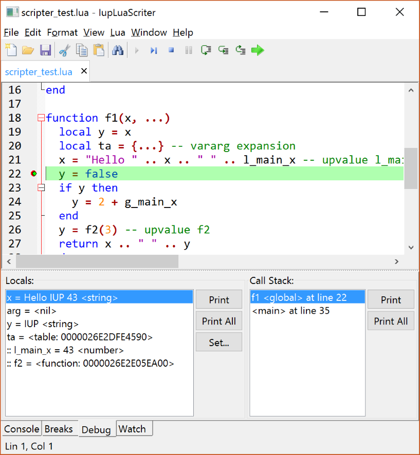
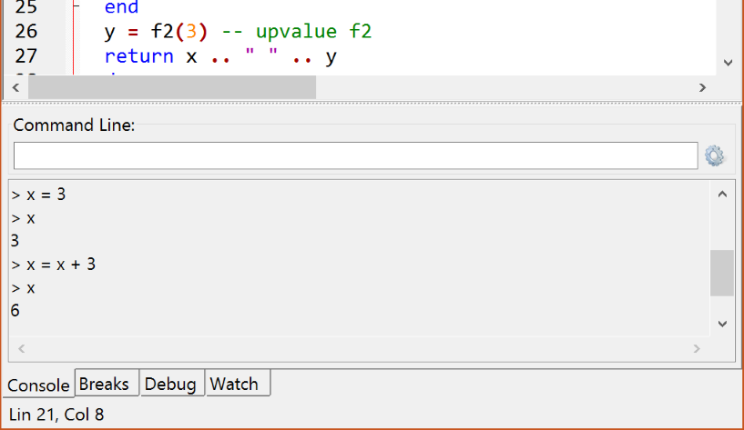
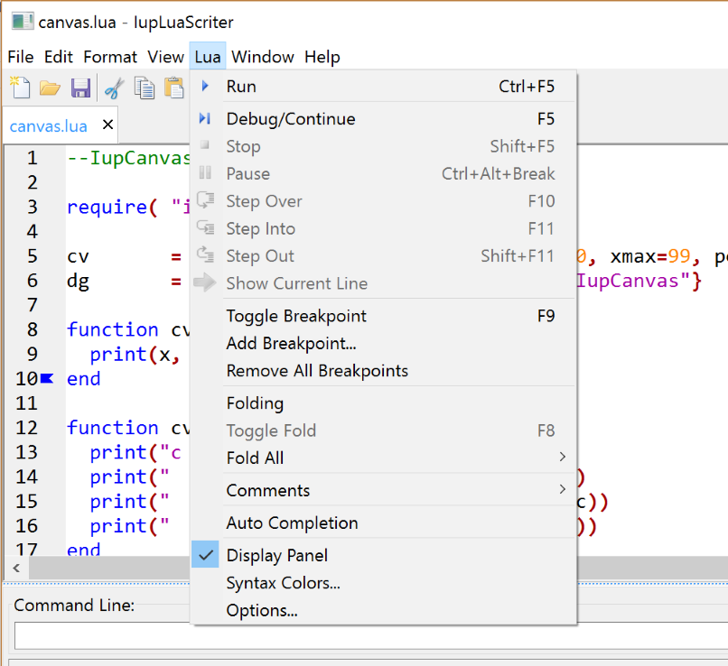
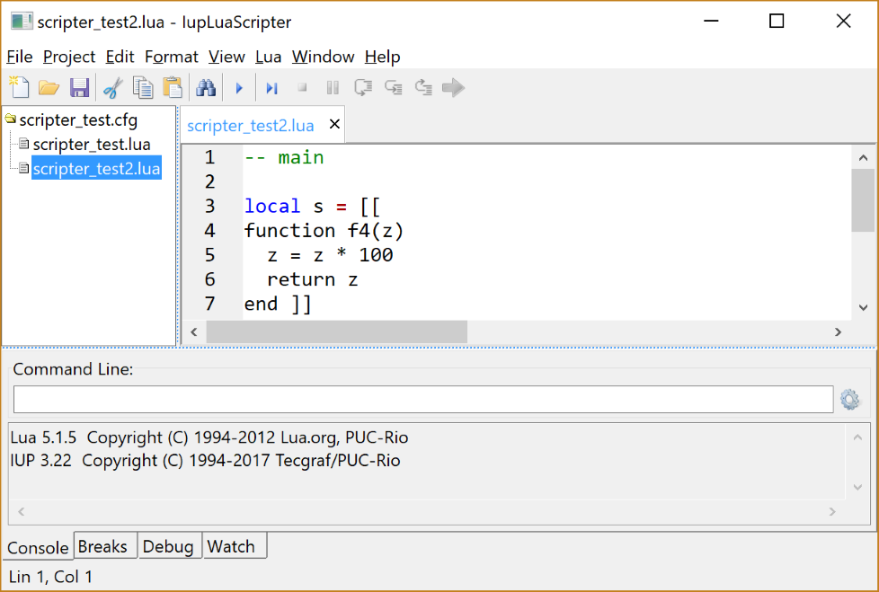

Creates a Lua script developer dialog using the IupScintillaDlg dialog. It can edit, run and debug Lua scripts. The dialog can be shown with IupShow, IupShowXY or IupPopup. The dialog inherits from the IupScintillaDlg dialog.
The IupLuaScripterDlgOpen function must be called after a IupOpen, so that the control can be used. The "iupluascripterdlg.h" file must also be included in the source code. The program must be linked to the controls library (iupluascripterdlg), with the iuplua library, with the iup_scintilla library, and with the Lua library.
To make the control available in Lua use require"iupluascripterdlg" or manually call the initialization function in C, iupluascripterdlglua_open, after calling iuplua_open. When manually calling the function the iupluascripterdlg.h file must also be included in the source code and the program must be linked to the Lua control library (iupluascripterdlg).
The control itself and its Lua binding are implemented in the same library since both depends on iuplua and Lua. The dialog works for Lua versions 5.1, 5.2 and 5.3.
The iuplua library must be initialized before creating any instance of the IupLuaScripterDlg dialog.
Files can be open from the command line, from the File/Open menu, or from drag and drop from the system file manager.
All the IupScintillaDlg text processing are available. Additionally it provides a Lua menu, and 4 tabs in a panel bellow the text, with Console, Breaks, Debug and Watch interfaces.
The text editor has syntax highlight for the Lua language and autocomplete for Lua keywords. We use only the "KEYWORDS0" attributes other keywords are free for the application.
At the Console the user can type and enter Lua commands that are executed and printed in the output area. The Lua "print" command and the Lua "io.write" command are redirected to the output area, the previous definitions are saved as "print_old" and "write_old". All the commands entered in the Command Line are saved in a history list that can be accessed using the arrow up and arrow down keys. If the original functions are restored then only the command line output will be displayed in the output area.
Any Lua commands can be typed in the command line, but they must be a complete and valid sentence. If the sentence evaluates and return one or more results then the results are printed in the output area. For instance:
> x = 3 (sentence entered in the command line are also printed with a "> " prefix) > x 3 > x + 4 7
Errors in the command line are displayed in the output (errors when running or debugging scripts are displayed in a separate window with more detailed information).
> x + y Error: [string "return x + y"]:1: attempt to perform arithmetic on global 'y' (a nil value)
Multiple return values are also printed:
> z = 5 > x, z 3 5
Notice that the output of a value here is different from a regular "print", in the sense that strings, tables and functions have a special treatment.
> x = "test" > x "test" > print(x) test
and
> t = {33, "test2", x = 123}
> t
{
33,
"test2",
x = 123,
}
> print(t)
table: 0000023CCA058AC0
and
> f1 [Defined in the file: "D:\tecgraf\iup\html\examples\Lua\scripter_test.lua" at line 18.] > print(f1) function: 0000024E6B4DF010
Breakpoints can be added by clicking the left margin in its most right area (the left area can has line numbers and bookmarks) or in the Breaks tab using the "Toggle Breakpoint" at the caret position or using the "Add" button and writing a filename and a line number. Breakpoints (and bookmarks) are saved in the application configuration file. When lines are removed or added, breakpoints position are automatically updated. But breakpoints are not restored in undo operations.
During the debug process, local variables of each stack level can be inspected in the Debug tab. The actual level is not changed when a Call Stack list level is selected, only its local variables are updated in the Locals list. The list supports 3 types of local variables: variables declared as "local" and function parameters; Vararg parameters; and Upvalues (external local variables). Varargs don't have names, so we list them as if a table called "vararg" was created and each element of the table is listed separately. Upvalues are listed last with a ":: " prefix, used simply to distinguish them from the other variables. For now, a local variable can be changed only if it is a boolean, string or a number. Variable arguments (vararg) are displayed only for Lua version 5.2 or newer. (Vararg and Upvalues since 3.23)
When printed, locals or stack, it display also some debug information:
l_main_x = 43 (pos=1) 43
and
f1, at line 22 (level=1)
[Defined in the file: "D:\tecgraf\iup\html\examples\Lua\scripter_test.lua" at line 18]
These values (level and pos) can be used in the functions "debug.getinfo(level, flags)" or "debug.getlocal(level, pos)" to obtain more information. But level is a relative stack level number, the actual stack level must be calculated depending on the situation you are going to it. Inside the command line you must add 6 levels.
You can execute code in the console command line while the debug is paused.
To debug event driven scripts, press Alt key before starting to debug the script. This will disable the automatic end of debugging when the script is fully executed. The debugging will remain active until it is stopped. (since 3.23)
During debug error management allows to pause the debugger at the error, so you can inspect variables and the stack. (since 3.23)
Lua code that are run from strings, instead of files, can also be debugged. But you can only set breakpoints when you step in the string and its contents are displayed in a new document. This temporary document is automatically closed when the debug is ended. (since 3.23)
During the debug the list of global variables or expressions in Watch is also updated with the respective values. When not in debug the list contains only the text of the variables or expressions to be watched. (since 3.23)
When a Project is used all Lua parameters and breakpoints are saved in the project file instead of the global configuration file. (since 3.23)
Ihandle* IupLuaScripterDlg(void); [in C]
iup.luascripterdlg{} -> (elem: ihandle) [in Lua]
luascripterdlg() [in LED]
Returns: the identifier of the created element, or NULL if an error occurs.
Supports all the IupDialog and IupScintillaDlg attributes.
Supports all the IupDialog and IupScintillaDlg callbacks.
The dialog can be freely customized to incorporate other menu items or controls.
int main(int argc, char **argv)
{
Ihandle *config;
lua_State *L;
Ihandle *menu;
Ihandle *main_dialog;
int i;
L = luaL_newstate();
luaL_openlibs(L);
createargtable(L, argv, argc); /* create table 'arg' */
iuplua_open(L);
IupLuaScripterDlgOpen();
IupSetGlobal("GLOBALLAYOUTDLGKEY", "Yes");
config = IupConfig();
IupSetAttribute(config, "APP_NAME", "iupluascripter");
IupConfigLoad(config);
main_dialog = IupLuaScripterDlg();
IupSetAttributeHandle(main_dialog, "CONFIG", config);
IupSetAttribute(main_dialog, "SUBTITLE", "IupLuaScriter");
menu = IupGetAttributeHandle(main_dialog, "MENU");
IupAppend(menu, IupSubmenu("&Help", IupMenu(
IupSetCallbacks(IupItem("&Help...", NULL), "ACTION", (Icallback)item_help_action_cb, NULL),
IupSetCallbacks(IupItem("&About...", NULL), "ACTION", (Icallback)item_about_action_cb, NULL),
NULL)));
/* show the dialog at the last position, with the last size */
IupConfigDialogShow(config, main_dialog, "MainWindow");
/* open a file from the command line (allow file association in Windows) */
for (i = 1; i < argc; i++)
{
const char* filename = argv[i];
IupSetStrAttribute(main_dialog, "OPENFILE", filename);
}
IupMainLoop();
IupDestroy(config);
IupDestroy(main_dialog);
IupClose();
lua_close(L);
return EXIT_SUCCESS;
}
|  Paused while Debugging |
|  Command line and Output |
|  Menus and Breakpoints |
|  Project Files |